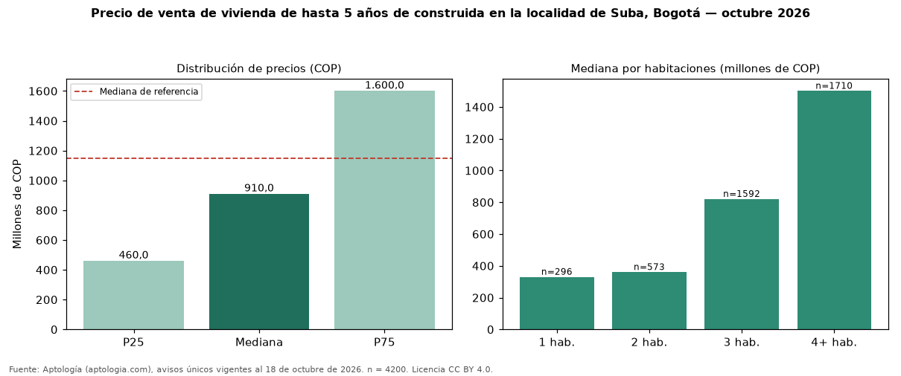

Precio de venta de vivienda de hasta 5 años de construida en la localidad de Suba, Bogotá — octubre 2026
Con 4200 avisos únicos, el precio mediano de vivienda de hasta 5 años de construida en venta en la localidad de Suba, Bogotá es COP 910 millones. Eso es 21 % menos que la mediana de toda la oferta de venta en la localidad de Suba, Bogotá (COP 1,15 mil millones). En todo Bogotá, la misma combinación tiene mediana COP 700 millones (+30 %). El rango intercuartílico va de COP 460 millones a COP 1,60 mil millones (razón 3,5). Por metro cuadrado, la mediana es COP 6.190.476/m² (+6 % frente a COP 5.837.070/m²), puesto 9 de 19 localidades comparables. Cruzando con la oferta de arriendo equivalente, la rentabilidad bruta implícita es 7,8 % anual. Por habitaciones: 1 habitación, COP 330 millones (n = 296); 2 habitaciones, COP 360 millones (n = 573); 3 habitaciones, COP 820 millones (n = 1592); 4 o más habitaciones, COP 1,50 mil millones (n = 1710). Datos abiertos CC BY 4.0 de Aptología; fuente y búsqueda de inmuebles: https://www.aptologia.com/venta/bogota/suba. Archivos: PDF de 2 páginas, CSV con las cifras y gráfica PNG.

| Avisos únicos | 4200 |
|---|---|
| Percentil 25 | COP 460.000.000 |
| Mediana | COP 910.000.000 |
| Percentil 75 | COP 1.600.000.000 |
| Mediana por m² | COP 6.190.476 |
Fuente: avisos vigentes de portales inmobiliarios recopilados por Aptología, deduplicados (mínimo 30 avisos únicos por celda). Precios pedidos, no cerrados. Fecha: 2026-10-18.